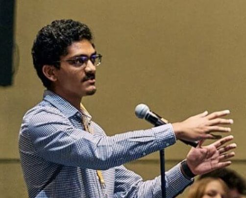

Undergraduate Research Assistant
I am an undergraduate studying neuroscience and mathematics, and I plan to become a physician-scientist. I’m interested in how the brain gives rise to cognition, decision-making, and intelligence, and I use computational models to study these questions. I’m currently studying how hidden circuit structure in recurrent neural networks can explain how the brain changes its computations when the context changes. Outside of research, I enjoy playing tennis, debating, and reading philosophy.